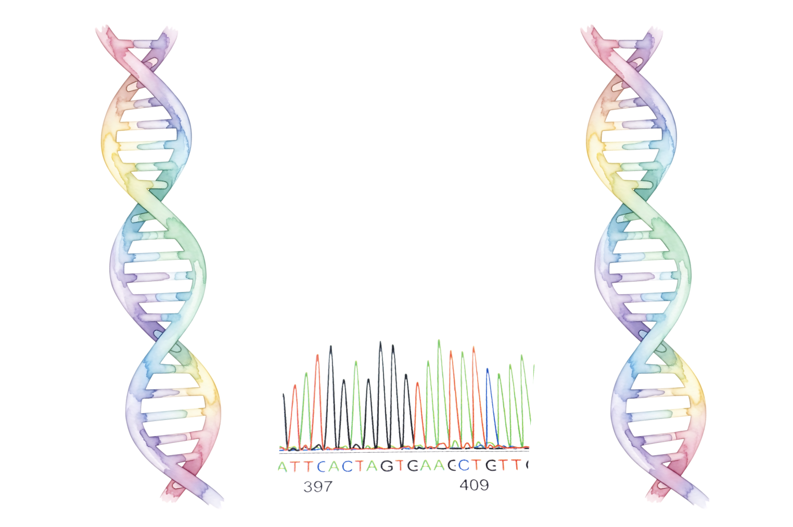
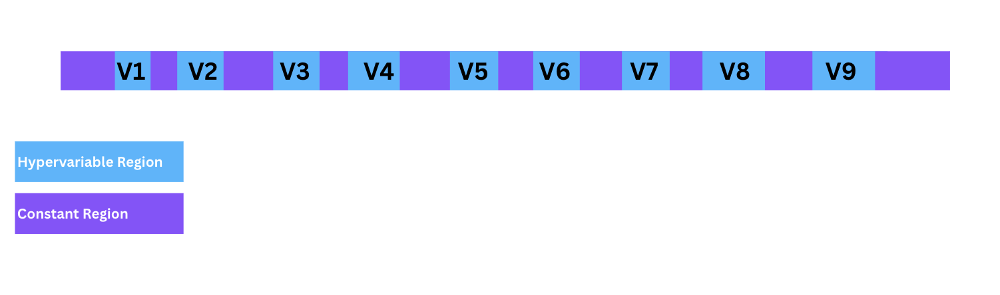

Microbial Sequencing Techniques
Before we actually have the data to analyse, we must analyse the DNA of our samlples through microbial sequencing technqiues. This section will take you through the sequencing techniques used to anlayse microbial data.
An Introduction to Amplicon Sequencing
Amplicon sequencing is a targeted DNA sequencing approach used to identify and compare specific genetic regions across many samples. For bacteria and archaea, this typically focuses on the 16S rRNA gene.
What is the 16S rRNA gene?

The 16S rRNA (ribosomal RNA) gene encodes the small subunit ribosomal RNA (SSU rRNA), which is a core structural and functional component of the 30S subunit of the prokaryotic ribosome. This RNA plays an essential role in protein synthesis.
What does ‘16S’ mean?
The term 16S refers to the sedimentation coefficient of the RNA molecule, the sedimentation coefficient refers to the rate at which a particle sediments in a centrifugal field. It is measured in Svedberg units, rather than its physical size or molecular weight. This means there are 16 Svedberg units.
Why is the 16S rRNA gene used in microbiota studies?
The 16S rRNA gene is widely used in microbiota studies because it is highly conserved across bacterial and archaeal taxa, meaning its sequence has remained very similar across different species over evolutionary time. This conservation allows for broad amplification of the gene using universal primers, while the presence of variable regions enables taxonomic discrimination between microorganisms.
What primers are used to sequence the 16S rRNA gene?

The primer pair used which targets the full-length 16S rRNA gene is 27F and 1492R, sequencing approaches that capture this entire gene are typically referred to as long-read sequencing.
What are hypervariable regions, and conserved regions, and why are they important?

The 16S rRNA gene (~1,500 bp) is evolutionary constrained, but it is interspersed with regions that are able to tolerate more sequence variation.
This creates a mosaic like stucture of:
9 hypervariable regions (V1-V9)
Intervening conserved (constant) regions
The hypervariable regions can provide species- or genus-specific signature sequences for bacterial identification. These hypervariable regions range from approximately 30 to 100 base pairs in length, and their degree of conservation varies widely. Sequencing the full-length 16S rRNA gene (approximately 1,500 bp) enables comparison across all 9 hypervariable regions, improving taxonomic resolution.
Conserved regions on the other hand, are regions that have remained relatively unchanged across bacteria over long evolutionary periods due to strong selective pressure. As a result, these regions evolve slowly and retain high sequence similarity even among distantly related bacteria. They also have an important function of being criticial for ribosome structure and protein synthesis, which is essential for bacterial survival.
In short, conserved regions are the universal primers, hypervariable regions allow for taxonomic discrimination.
The Types of Amplicon Sequencing
Within bacterial amplicon sequencing, there are two main types:
Short-read sequencing:
Produces high-accuracy reads of relatively short DNA fragments, commonly used for microbial community profiling.
It is referred to as short-read sequencing because it only sequences a section of the 16S rRNA gene. In short read sequences only 1-2 specific hypervariable regions will be selected. There are a range of hypervariable regions commonly used:
- V1 - V3: 27-534 bp of the 16S gene.
- V3: 341-534 bp of the 16S gene.
- V3 - V4: 341-806 bp of the 16S gene.
- V4: 515-806 bp of the 16S gene.
Short-read sequencing is typically performed using high-throughput sequencing platforms, these are designed to generate millions of reads in parallel. The Illumina sequencing platform has become the dominant technology for short read 16S rRNA gene amplicon sequencing.
Illumina Technology
Illumina uses sequencing-by-synthesis (SBS) chemistry. This includes fluorescently labelled, reversible terminator nucleotides being incorporated one base at a time and imaged after each cycle.
Illuimina is known for havig high accuracy: Illumina platforms typically achieve ≥99.9% per-base accuracy, making them a gold standard for applications where low error rates are critical (e.g. variant calling, microbial community profiling).
Depending on the instrument used (e.g. MiSeq, NextSeq, NovaSeq), Illumina can generate millions to billions of reads per run, enabling large-scale population studies and deep metagenomic sequencing.
The cost per base is very low.
Long-read sequencing:
Produces longer DNA reads, allowing better resolution of complex genomic regions and full-length 16S rRNA gene sequencing.
Sequencing platforms for high-throughput sequencing: Pacific Biosciences (PacBio) Uses single-molecule real-time (SMRT) sequencing to generate highly accurate long reads (HiFi reads), well suited for full-length 16S rRNA sequencing and genome assembly.
Oxford Nanopore Technologies (ONT) Sequences DNA by measuring changes in electrical current as molecules pass through nanopores; enables ultra-long reads and real-time sequencing, though with higher raw error rates than short-read platforms.
How amplicon sequencing works:
- DNA extraction from samples is conducted (e.g. gut, soil, feces, fruit, insect tissue)
Samples such as gut contents, soil, feces, fruit, insect tissue, etc, are first collected. DNA is extracted from these samples using a commercial DNA extraction kit or laboratory protocol. This process breaks open cells and isolates total DNA, which is then purified and stored in a solution (the DNA extract) for downstream analysis.
- In the lab, PCR amplification is used to target a specific gene region using primers that bind conserved sites.
Once a DNA sample has been extracted, a PCR reaction mix is prepared. This typically includes:
- The extracted DNA as a template
- Forward and reverse primers (chosen based on short-read or long-read sequencing)
- DNA polymerase, nucleotides (dNTPs), buffer, and other necessary solutions
The PCR reaction is then carried out using standard thermal cycling steps:
- Initial denaturation – separates the DNA strands
- Denaturation – repeated in cycles to keep strands separate
- Annealing – primers bind to the target regions
- Extension – DNA polymerase synthesizes new DNA
These steps are repeated for multiple cycles to amplify the target region.
- Indexing/barcoding so many samples can be pooled together.
Indexing (barcoding) is the process of adding a short, unique DNA sequence (an index or barcode) to each sample during library preparation. Because each sample gets a different index, many samples can be pooled together and sequenced in a single run. After sequencing, the reads are demultiplexed—sorted back to their original samples—based on these index sequences.
- High-throughput sequencing.
Depending on whether short-read or long-read sequencing is used, high-throughput sequencing is used.
- Bioinformatic analysis to infer taxonomic identity or genetic variation.
A pipeline is used to analyse the data.
What does 16S actually mean in the 16S rRNA gene?